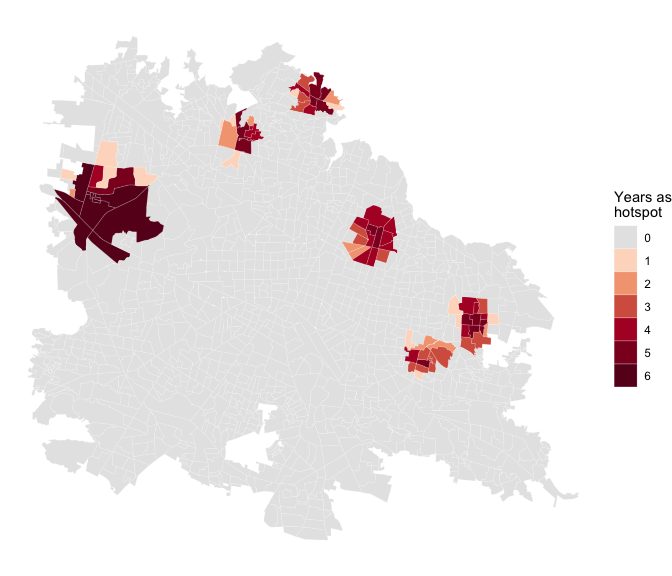
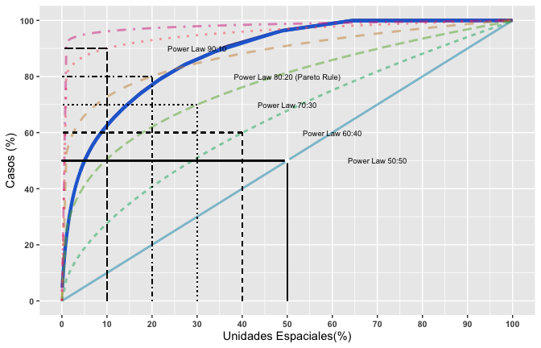

Persistent transmission hotspots (Getis-Ord Gi*)
Source:vignettes/hotspots_analysis_en.Rmd
hotspots_analysis_en.RmdA transmission hotspot is a spatial unit (here, an AGEB) with many more cases than expected, surrounded by units that also have many cases. When the same units are hotspots year after year, they are persistent hotspots: the places where dengue is transmitted every season and where vector control gives the largest return. This article finds them with the local statistic Getis-Ord Gi* (Getis & Ord 1992; Ord & Getis 1995), calculated year by year.
The example uses sim_dengue, simulated
geocoded cases of the metropolitan area of Guadalajara (2019-2024); with
the real geocoded dataset the steps are the same.
1. The cases
table(sim_dengue$ANO)
#>
#> 2019 2020 2021 2022 2023 2024
#> 1413 414 259 597 1139 16802. The AGEB of the metropolitan area
The urban AGEB of Guadalajara, Zapopan, Tlaquepaque and Tonalá come from rgeomex:
ageb <- rgeomex::extract_ageb(locality = c("Guadalajara", "Zapopan", "Tlaquepaque", "Tonalá"),
cve_edo = "14")$ageb
ageb <- ageb[, "CVEGEO"]
nrow(ageb)
#> [1] 12703. Cases by AGEB and year
point_to_polygons() counts the cases of each AGEB in
each year; the result has one column per year (DENV_2019,
…, DENV_2024).
x <- point_to_polygons(x = sim_dengue, y = ageb, ids = "CVEGEO", time = ANO,
coords = c("long", "lat"), crs = 4326, dis = "DENV")
head(sf::st_drop_geometry(x))
#> CVEGEO DENV_2019 DENV_2020 DENV_2021 DENV_2022 DENV_2023 DENV_2024
#> 1 1403900013482 1 0 0 0 1 0
#> 2 1403900012696 0 0 0 0 0 0
#> 3 1403900014207 0 0 0 0 2 0
#> 4 1403900013020 2 0 0 0 0 0
#> 5 1403900014194 0 0 1 0 1 0
#> 6 1403900015243 0 0 0 0 0 14. Hotspots with Getis-Ord Gi*
gihi() calculates Gi* for each year with a
queen-contiguity neighbourhood that includes the AGEB itself, and marks
as hotspot the AGEB whose Gi* is above the Bonferroni-corrected critical
value (alpha = 0.95). It returns, for each AGEB, the number
of years it was a hotspot (intensity_gi) and whether it was
a hotspot at least once (hotspots_gi).
hotspots <- gihi(x = x, gi_hi = "gi", id = "CVEGEO", dis = "DENV",
time = "year", alpha = 0.95)
table(hotspots$intensity_gi)
#>
#> 0 1 2 3 4 5 6
#> 1185 14 9 16 19 16 11
ggplot(hotspots) +
geom_sf(aes(fill = factor(intensity_gi)), colour = "white", linewidth = 0.05) +
scale_fill_manual(values = c("0" = "grey90", "1" = "#FDDBC7", "2" = "#F4A582",
"3" = "#D6604D", "4" = "#B2182B", "5" = "#8C0D25",
"6" = "#67001F"),
name = "Years as\nhotspot") +
theme_void()
Number of years (2019-2024) that each AGEB was a hotspot.
The AGEB that were hotspots in most years are the persistent hotspots.
5. How many cases are in the hotspots?
A few AGEB concentrate a large share of the cases. Sorting the AGEB
from more to fewer cases and accumulating, the curve shows the
percentage of the cases (y) in a percentage of the AGEB (x); the dashed
lines are theoretical power laws (power_laws).
cases <- rowSums(sf::st_drop_geometry(x)[, grep("^DENV_", names(x))], na.rm = TRUE)
d <- data.frame(n = cases, hotspots_gi = hotspots$hotspots_gi, loc = "Guadalajara")
d <- d[order(-d$n), ]
d$id_perc_cum <- seq_len(nrow(d)) / nrow(d) * 100
d$perc_cumsum_n <- cumsum(d$n) / sum(d$n) * 100
# share of the cases in the hotspots, and share of the AGEB they are
round(100 * c(cases = sum(d$n[d$hotspots_gi == 1]) / sum(d$n),
ageb = mean(d$hotspots_gi == 1)), 1)
#> cases ageb
#> 52.0 6.7
Cumulative percentage of cases by percentage of AGEB.